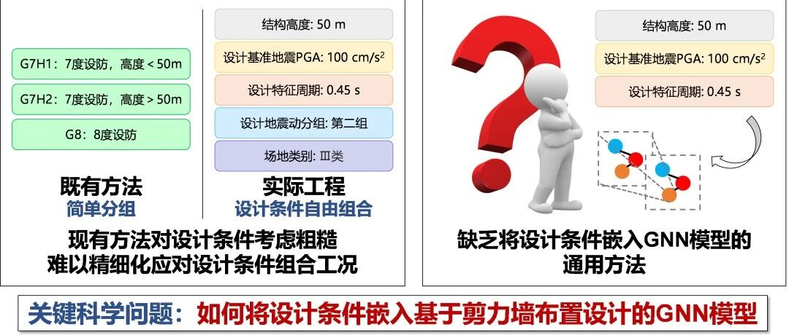

揭秘：图神经网络如何精细考虑抗震设计条件影响？| 新论文：设计条件嵌入GNN的剪力墙布置智能设计方法

论文：Design-Condition-Informed Shear Wall Layout Design Based on Graph Neural Networks. Advanced Engineering Informatics. 2023.
DOI: https://doi.org/10.1016/j.aei.2023.102190
5分钟短视频介绍：
00
太长不看版
国庆节前我们发布了GNN-Shearwall v2.0版本（详见：AIstructure-Copilot-v0.1.2更新：精细化考虑抗震设计条件影响的全新GNN版本，请您来试试），可以在剪力墙结构方案设计时精细考虑抗震设计条件的影响。本文将进一步揭示其科学原理。
图神经网络（GNN）相比于基于像素图的生成对抗网络，具有计算量小，更好反映结构拓扑特征的优点，在剪力墙（详见：新论文：基于图神经网络的剪力墙布置人工智能设计方法）、框架梁（详见：论文和发明专利：基于图神经网络的框架梁智能化布置）等布置设计中已经取得了一定的成功。然而，现有的基于GNN的方法忽略了设防基本地震加速度、场地特征周期和结构高度等影响因素，只能简单考虑结构设计条件分组，难以满足实际工程需求。
为解决这一问题，本研究提出了一种改进的基于GNN的剪力墙布置设计方法，该方法将设计条件（包括设防基本地震加速度、场地特征周期和结构高度）融入GNN，并严格评估了其相对于既有方法的优势。研究结果表明：本研究提出的方法能够很好考虑剪力墙布置和设计条件的相关性，可靠性和有效性良好。
01
研究背景
近年来，我们课题组提出了基于像素图像的智能化设计方法StructGAN，并取得了良好发展。然而，StructGAN利用像素图来表征剪力墙结构，图像分辨率低了，不能充分反映结构平面图上薄薄的一片剪力墙的特征，图像分辨率高了，又面临模型参数多、耗用计算资源大的问题。此外，由于像素图像中使用像素点表示不同的构件，构件之间的拓扑关系并没有被显式地表征，导致与后续建模分析等设计流程衔接不好。
因此，我们课题组又提出了基于图（Graph）数据和图神经网络（GNN）的智能化设计方法。图（Graph）数据由图节点和图边组成，结合节点的位置特征，即是天然的矢量化形式，更方便与设计流程中的后续阶段衔接。此外，相比于像素图像，图谱表征有效降低了数据的特征维度。如图1所示，如果使用像素图像方法预测一段剪力墙的布置，可能需要预测500个像素格点的类别，但使用GNN方法仅仅需要预测2个数值，即两侧剪力墙的长度占比。在模型训练时，GPU占用数据量也从20G降低到了0.7G，提升了深度学习效果。

图1 像素图像方法和GNN方法预测剪力墙的示意图
尽管课题组提出的基于GNN的剪力墙方案设计方法相比于基于像素图像的方法具有显著优势，但是仍有2大难题，如图2所示。
难题（1）是现有方法对设计条件考虑粗糙，难以精细化应对设计条件组合工况。目前基于GNN的设计方法将数据按照设防烈度和高度简单地分为三组（G7H1，G7H2，G8H1H2）进行分别训练，分组较为粗糙，难以充分考虑剪力墙布置和设计条件的相关性。具体地，设防烈度仅考虑了7度和8度（分别表示设防基本地震加速度为100 cm/s2 和 200 cm/s2），结构高度也仅考虑了3种（H1，H2，H1H2，分别表示高度< 50 m，50-150 m，0-150 m）。此外，之前研究也没有考虑场地特征周期，然而场地特征周期往往和设防基本地震加速度以及结构自振周期共同作用来指导结构设计。
以离散分组的形式考虑设计条件有很大的局限性，这无法充分反映工程实际的设计需求。例如，设防基本地震加速度为50 cm/s2就超出了之前研究所考虑的范围。此外，也无法根据具体的高度指导剪力墙设计，只能考虑粗糙的高度分组。
难题（2）是缺乏将设计条件嵌入GNN模型的通用方法。目前尚无设计条件嵌入GNN指导结构设计的智能设计方法，如何将设计条件嵌入面向剪力墙布置设计的GNN模型是关键科学问题。

图2 课题组此前基于GNN布置剪力墙方法的关键难题
因此，本研究基于GNN来研究设计条件指导的剪力墙结构设计方法，如图3所示，通过GNN强大的拓扑特征处理能力以及对设防基本地震加速度、场地特征周期、具体的结构高度三个关键设计条件的精细考虑来解决上述不足。

图3 基于设计条件嵌入GNN的剪力墙布置智能设计方法
02
研究方法及核心技术
（1）关键设计条件
设防基本地震加速度、场地特征周期、结构高度在《建筑抗震设计规范》GB 50011–2010中是影响结构设计结果的三个关键参数。图4所示为《建筑抗震设计规范》中抗震设计反应谱的示意图。图中，α为谱加速度，αmax为谱加速度最大值，Tg为场地特征周期，T为结构自振周期。

图4 阻尼比为0.05时《建筑抗震设计规范》中抗震设计反应谱示意图
根据《建筑抗震设计规范》和工程师经验，设防基本地震加速度将直接影响结构设计时的地震动反应谱加速度峰值αmax。场地特征周期Tg会显著影响结构设计时的地震动反应谱的形状。结构高度往往对结构的自振周期T有显著影响。结构的自振周期和抗震设计反应谱是建筑结构抗震设计的基础，因此，设防基本地震加速度、场地特征周期、结构高度在结构抗震设计中是至关重要的。本研究通过将设防基本地震加速度、场地特征周期、结构高度嵌入剪力墙结构图表征的节点特征和边特征之中，来考虑它们对剪力墙布置设计结果的影响。
（2）设计条件嵌入的剪力墙结构的图表征方法
我们在课题组之前研究的基础上，采用具有良好设计效果的图边表征方法来表征剪力墙结构。将标准化后的设防基本地震加速度（an）、场地特征周期（Tn）、结构高度（Hn）作为图节点和图边特征的补充特征，加入剪力墙结构图数据的图节点和图边特征之中。如图5所示。

图5 设计条件嵌入的剪力墙结构的图表征方法
（3）设计条件特征嵌入的GNN模型
在课题组之前研究的基础上，我们选择GNN-EP-4作为神经网络的基本架构，构建了用于处理设计条件嵌入的图数据特征的GNN模型，如图6所示。

图6 设计条件特征嵌入的GNN模型
03
测试结果
为综合评估GNN设计结果的空间布置质量以及力学和经济特征，我们提出了综合评价指标ScoreDC。ScoreDC是基于IoU的指标和基于剪力墙率的指标的组合。基于IoU的指标IoUSW用来评判GNN方法的剪力墙布置设计和工程师的剪力墙布置设计的相似度。剪力墙率是反映剪力墙设计结果力学特征和经济特征的关键指标，基于剪力墙率的指标用来评估GNN设计和工程师设计的力学和经济特征相似度。

图7 综合评价指标ScoreDC
图8展示了部分测试集案例的GNN设计和工程师设计的对比结果。可以看出，测试集包括多种建筑布局和设计条件组合，本文提出的方法可以在各种建筑布局和设计条件组合下，较好地进行剪力墙布置的设计。

图8 部分测试集结果
04
案例研究
以测试集的一个案例为例，图9展示了同一个建筑布局在不同设计条件下的剪力墙布置的设计结果以及相应的剪力墙率swtotal。可以看出，剪力墙布置的多寡随设计条件变化明显。

图9 同一个建筑布局在不同设计条件下的剪力墙布置的设计结果
本研究还分析了图9所示案例在地震作用下的层间位移角，如图10所示。图11为重力荷载作用下标准层楼板的竖向位移。可以看出，剪力墙结构性能与剪力墙布置高度相关。所有设计结果的最大层间位移角均小于0.001的设计限值，且所有标准层楼板的竖向位移均小于5mm。

图10 案例在地震作用下的层间位移角

图11 案例在重力荷载作用下标准层楼板的竖向位移
05
结语
本研究初步实现了设计条件嵌入GNN指导剪力墙布置设计，尚存在诸多不足，欢迎各位专家批评指正！
我们希望将课题组完成的研究成果更好地为工程设计服务，所以我们近期发表的论文也在ai-structure.com网站上提供了具体使用程序，欢迎大家试用并反馈。
联络邮箱:
AIstructure-Copilot-v0.1.2更新：精细化考虑抗震设计条件影响的全新GNN版本，请您来试试(20230928)
ai-structure.com：剪力墙结构材料用量AI预测模块上线测试(20230731)
AIstructure-Copilot：嵌入CAD平台的结构智能设计助手(20230711)
建筑结构生成式智能设计在日内瓦国际发明展上获“评审团特别嘉许金奖”(20230519)
ai-structure.com：土木工程自然语言规则AI解译模块上线测试(20230513)
AI剪力墙设计问卷调查结果(20230508)
相关论文
Liao WJ, Lu XZ, Huang YL, Zheng Z, Lin YQ, Automated structural design of shear wall residential buildings using generative adversarial networks, Automation in Construction, 2021, 132, 103931. DOI: 10.1016/j.autcon.2021.103931.
Lu XZ, Liao WJ, Zhang Y, Huang YL, Intelligent structural design of shear wall residence using physics-enhanced generative adversarial networks, Earthquake Engineering & Structural Dynamics, 2022, 51(7): 1657-1676. DOI: 10.1002/eqe.3632.
Zhao PJ, Liao WJ, Xue HJ, Lu XZ, Intelligent design method for beam and slab of shear wall structure based on deep learning, Journal of Building Engineering, 2022, 57: 104838. DOI: 10.1016/j.jobe.2022.104838.
Liao WJ, Huang YL, Zheng Z, Lu XZ, Intelligent generative structural design method for shear-wall building based on “fused-text-image-to-image” generative adversarial networks, Expert Systems with Applications, 2022, 118530, DOI: 10.1016/j.eswa.2022.118530.
Fei YF, Liao WJ, Zhang S, Yin PF, Han B, Zhao PJ, Chen XY, Lu XZ, Integrated schematic design method for shear wall structures: a practical application of generative adversarial networks, Buildings, 2022, 12(9): 1295. DOI: 10.3390/buildings1209129.
Fei YF, Liao WJ, Huang YL, Lu XZ, Knowledge-enhanced generative adversarial networks for schematic design of framed tube structures, Automation in Construction, 2022, 144: 104619. DOI: 10.1016/j.autcon.2022.104619.
Zhao PJ, Liao WJ, Huang YL, Lu XZ, Intelligent design of shear wall layout based on attention-enhanced generative adversarial network, Engineering Structures, 2023, 274, 115170. DOI: 10.1016/j.engstruct.2022.115170.
Zhao PJ, Liao WJ, Huang YL, Lu XZ, Intelligent beam layout design for frame structure based on graph neural networks, Journal of Building Engineering, 2023, 63, Part A: 105499. DOI: 10.1016/j.jobe.2022.105499.
Zhao PJ, Liao WJ, Huang YL, Lu XZ, Intelligent design of shear wall layout based on graph neural networks, Advanced Engineering Informatics, 2023, 55, 101886, DOI: 10.1016/j.aei.2023.101886
Liao WJ, Wang XY, Fei YF, Huang YL, Xie LL, Lu XZ*, Base-isolation design of shear wall structures using physics-rule-co-guided self-supervised generative adversarial networks, Earthquake Engineering & Structural Dynamics, 2023, DOI:10.1002/eqe.3862.
Feng YT, Fei YF, Lin YQ, Liao WJ, Lu XZ, Intelligent generative design for shear wall cross-sectional size using rule-Embedded generative adversarial network, Journal of Structural Engineering-ASCE, 2023, 149(11). 04023161. DOI:10.1061/JSENDH.STENG-12206.
Fei YF, Liao WJ, Lu XZ*, Guan H*, Knowledge-enhanced graph neural networks for construction material quantity estimation of reinforced concrete buildings, Computer-Aided Civil and Infrastructure Engineering, 2023, DOI: 10.1111/mice.13094.
Zhao PJ, Fei YF, Huang YL, Feng YT, Liao WJ, Lu XZ*, Design-condition-informed shear wall layout design based on graph neural networks, Advanced Engineering Informatics, 2023, 58: 102190. DOI: 10.1016/j.aei.2023.102190.

学术报告视频
公众号文章
---End--